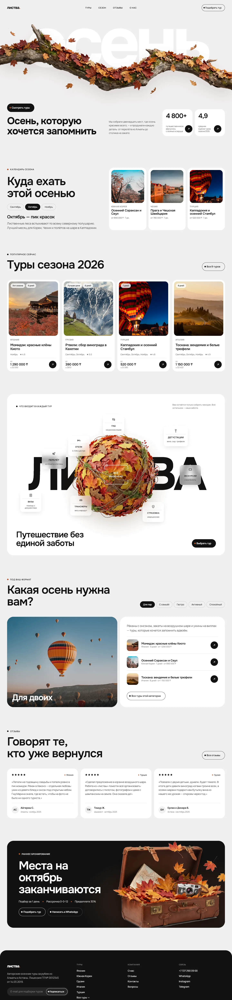

Турагентство осенних туров
листва.
Сайт, который продаёт осень. Листья падают прямо на первом экране, туры фильтруются по месяцу и бюджету, а цена пересчитывается на странице тура.
- Страниц
- 5
- Каталог
- Фильтры по региону, формату, месяцу и бюджету
- Заявки
- В Google Таблицу и на почту
